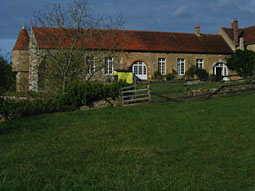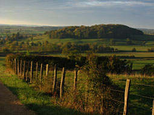 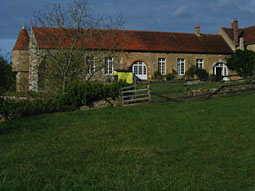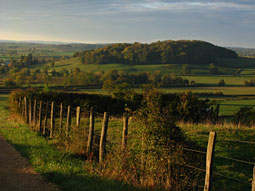 |
 |
| Conception La philosophie de Monthelon voir aussi : [ En amont de l'amont.pdf ] |
| Monthelon est un lieu dédié à la recherche et au développement d'idées ainsi qu'à la mise en oeuvre de projets artistiques multidisciplinaires et transgressant les genres |
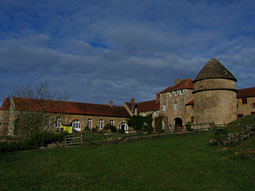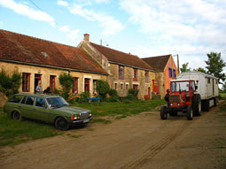 |
| Il est également possible d'y organiser des séminaires, des conférences et des ateliers de réflexion à contenu politique, social ou philosophique ainsi que des médiations ayant pour objet la résolution de conflits. |
  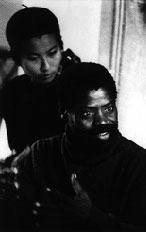 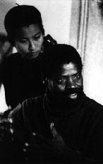 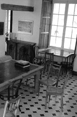 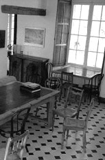 |
| Sur une colline, loin des pressions urbaines, différents bâtiments et équipements créent des conditions adaptées pour un travail en résidence, collectif ou individuel. |
 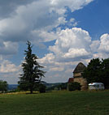 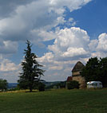 |
 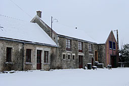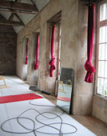 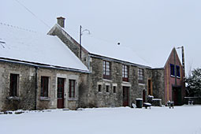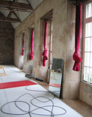 |
|
| |
| Infrastructure |
| ... met à la disposition de groupes et de compagnies de théâtre, de danse, de cirque, des arts plastiquesde performances ou de musique une infrastructure de travail. |
| 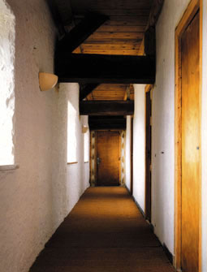 |

 |
|
|
| Des groupes d'environ 20 personnes peuvent être hébergés. Dix autres personnes peuvent être accueillies pour réaliser un projet individuel. |
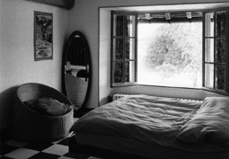  |
L'infrastructure
comprend : des logements individuels équipés |
   |
| - chambres simples et doubles, à plusieurs lits et éventuellement quel-ques roulottes |
| - des équipements sanitaires (10 toilettes, 6 douches, 2 baignoires)
|
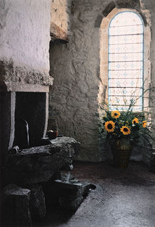 |
| - une cuisine
professionnelle
entièrement équipé |

| 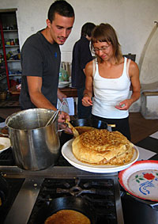 |
- une salle à manger,
- une salle de séjour,
- une bibliothèque et une vidéothèque |
 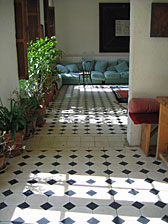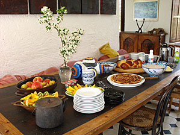 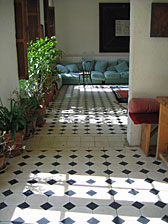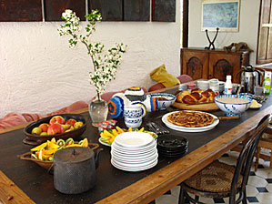 |
- un atelier d'électronique avec un équipement
- un atelier de serrurerie
- une menuiserie de base
- un atelier de couture,
- un atelier de sculpture
- divers autres atelier |
| 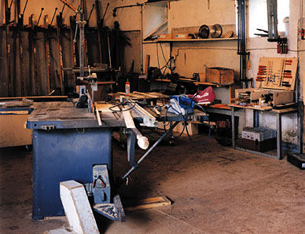
| 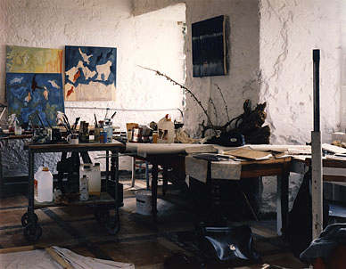 |
| |
| - une grande salle pour le travail corporel ou la méditation |
 |
| - une salle de théâtre et de répétition avec un équipement
technique de base | 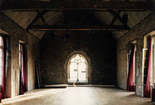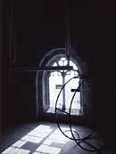 |
- un bureau avec connexion Internet
- un stock de costumes
- un piano à queue
- un chapiteau de cirque avec un équipement technique de base
- une piscine |
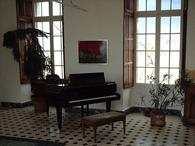
|
| - un espace de de 2 km2 |
 |
| - un chapiteau |
 |
|
| |
| accès |
| ... est perché sur une colline pittoresque près du village de Montréal, dans le département de l'Yonne en Bourgogne, dans l'une des régions les moins peuplées de France. |
  |
| - Très bonne connexion ferroviaire internationale: ligne de TGV Paris < > Dijon, gare de Montbard, - Liaison directe avec l'aéroport Charles de Gaulle ou Dijon et Lille (avec correspondances pour Londres, Bruxels, Berlin, etc.) , - Accessible par l'autoroute A6, sortie Avallon, sur l'axe Paris-Lyon |
 |
| |
| vivre et travailler |
| L'accueil à Monthelon et la durée du séjour sont liés à un projet. Des artistes de différentes nations y vivent dans une atmosphère de tolérance et d'ouverture. Monthelon est un espace pour la recherche individuelle. Il ouvre dans cette perspective des possibilités de sortir du conditionnement de la vie quotidienne et de se confronter à des gens qui partagent les mêmes préoccupations. Les conditions du séjour à Monthelon feront l'objet d'un accord mutuel entre les gérants et les candidats après une simple discussion et l'étude des documents - sous toutes formes que ce soit - illustrant leur projet. |
  |
| |
| histoire |
| Le château de Monthelon est mentionné pour la première fois dans des documents du 8ème siècle.
Après avoir traversé le Serein, la route conduisant à Aisy contourne en écharpe le versant de la montagne de Montelon et vient passer près de l'enclos d'un très ancien château désigné sous le nom de Montis-Alo dès le IXe siècle, qui fut autrefois un village. Ce château primitif n'est pas parvenu jusqu'à nos jours; la construction actuelle, remaniée à diverses époques, date du XVIIe siècle en grande partie. On reconsruisit avec une certaine régularité un grand corps de logis faisant face à l'ouest. Il fut détruit au 13ème siècle, à l'époque des Croisades, par des maraudeurs. Grâce á l'essor du duché de Bourgogne, Monthelon fut par la suite rénové et devint le fief d'un comté. |
| 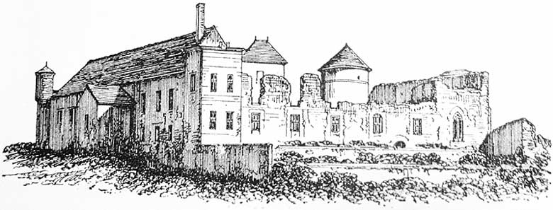 |
Le manoir seigneurial appartenait en 1280 à Henri, bailli de Montréal; à Robert de Sermizelles, en 1315; à Robert de Monteplain, en 1370. Il fut vendu par Gauthier de Brignard, seigneur de Corsaint, à Huguenin, gruyer de Montréal, en 1374.
Pendant la révolution (1789-1795), il fut en partie détruit par des paysans rebelles.
Il appartenait 1870 à la famille en Denèvre, de Domecy. De vastes bâtiments, démolies à moitié, servait de ferme et quelques masures qui s'adossent à d'anciennes murailles composent tout ce qui reste du Montis-Alo . Source : Tiré de Victor Petit, Description des villes et campagnes du Département de l'Yonne. Arrondissement d'Avallon , Avallon: Librairie Voillot, 2001 (première édition Auxerre: Ch. Gallot, 1870), S. 116 |
| La chapelle de la Vierge, du château de Montelon, se reconnaît encore au milieu des bâtiments ruinés; c'est une construction fort simple qui semble dater du XVe siècle. Le vitrail de l'ancienne chapelle existe toujours. Après la Deuxième guerre mondiale, le château a été partiellement reconstruit et le vitrail a été déplacé sur l'aile gauche de la batisse actuelle. Après la deuxième guerre mondiale, Monthelon fut transformé en orphelinat et plus tard en colonie de vacances pour un comité d'entreprise. La transformation du château en centre de production artistique a commencé en 1989, date à laquelle Monthelon fut acquis par Eva et Ueli Hirzel. Depuis 2008 il appartenait Ueli Hirzel et Daniel Ott. |
 |
| |
| bilan |
| 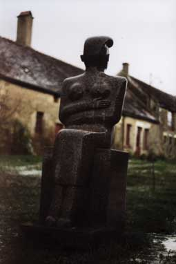 |
En vingt ans d' existence, Monthelon a accueilli environ 1500 artistes de 22 nations différentes et permis la réalisation de 500 projets. Monthelon a hébergé en moyenne 12 personnes travaillant sur un projet. Ce calcul ne prend pas en compte les gérants et leurs invités ponctuels. La durée moyenne du séjour par personne a été de 4 semaines.
voir : participantes en detaille de 2000 au 2013
voir aussi : quelques homepages de residents |
| |
| Répercussions sur les environs |
| Conséquences directes des projets réalisés à Monthelon, 11 familles représentant un total de 52 personnes se sont installées dans les proches environs. 22 enfants y sont nés depuis. Pendant cette période, 15 maisons ou propriétés on été achetées, reconstruites et rénovées. En étroite collaboration avec des artisans locaux, des gradins, des roulottes, des décors et divers accessoires on été construits pour les projets mis en œuvre à Monthelon, les effets sur l'économie locale n'étant ainsi pas négligeables. |
  |
| |
| plan |
 |
1er et 2ème étage |
 |
| |
au debut de page
Layout et Photos © Su Tiqqun |